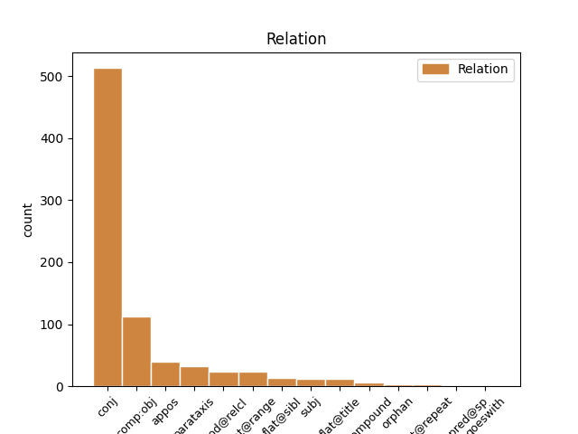
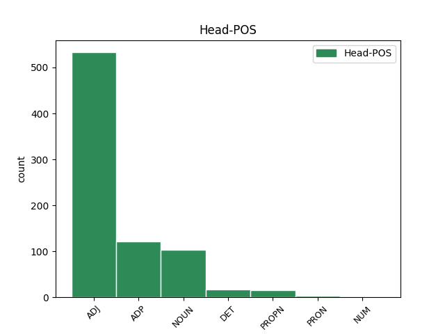
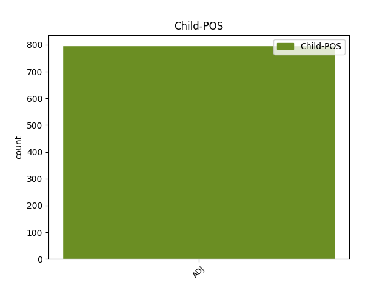

Distribution of features within this leaf



Agreement Rules sorted by frequency.
- When the dependent token is the conjunct(conj) of the head token, and the dependent token is ADJ.
1 З _ _ _ _ 0 _ _ _
2 цієї _ _ _ _ 0 _ _ _
3 суми _ _ _ _ 0 _ _ _
4 більш _ _ _ _ 0 _ _ _
5 ніж _ _ _ _ 0 _ _ _
6 2 _ _ _ _ 0 _ _ _
7 млрд _ _ _ _ 0 _ _ _
8 . _ _ _ _ 0 _ _ _
9 ₴ _ _ _ _ 0 _ _ _
10 було _ _ _ _ 0 _ _ _
11 перераховано _ _ _ _ 0 _ _ _
12 до _ _ _ _ 0 _ _ _
13 державного державний ADJ Ao-msgf Case=Gen|Gender=Masc|Number=Sing 0 _ _ _
14 і _ _ _ _ 0 _ _ _
15 місцевих місцевий ADJ Ao--pgf Case=Gen|Number=Plur 13 conj _ Id=39kr|LTranslit=miscevyj|Translit=miscevych
16 бюджетів _ _ _ _ 0 _ _ _
17 . _ _ _ _ 0 _ _ _
1 Утримання _ _ _ _ 0 _ _ _
2 морських _ _ _ _ 0 _ _ _
3 ссавців _ _ _ _ 0 _ _ _
4 у _ _ _ _ 0 _ _ _
5 неволі _ _ _ _ 0 _ _ _
6 із _ _ _ _ 0 _ _ _
7 забезпеченням _ _ _ _ 0 _ _ _
8 умов _ _ _ _ 0 _ _ _
9 , _ _ _ _ 0 _ _ _
10 максимально _ _ _ _ 0 _ _ _
11 наближених _ _ _ _ 0 _ _ _
12 до до ADP Spsg Case=Gen 0 _ _ _
13 природних природний ADJ Afp-pgf Case=Gen|Degree=Pos|Number=Plur 12 comp:obj _ Id=38z0|LTranslit=pryrodnyj|Promoted=Yes|SpaceAfter=No|Translit=pryrodnych
14 , _ _ _ _ 0 _ _ _
15 є _ _ _ _ 0 _ _ _
16 практично _ _ _ _ 0 _ _ _
17 неможливим _ _ _ _ 0 _ _ _
18 . _ _ _ _ 0 _ _ _
1 Сукня _ _ _ _ 0 _ _ _
2 - _ _ _ _ 0 _ _ _
3 кардиган _ _ _ _ 0 _ _ _
4 оздоблена оздоблений ADJ Ap-fsns-ep Aspect=Perf|Case=Nom|Gender=Fem|Number=Sing|VerbForm=Part|Voice=Pass 0 _ _ _
5 монохромною _ _ _ _ 0 _ _ _
6 вишивкою _ _ _ _ 0 _ _ _
7 : _ _ _ _ 0 _ _ _
8 геометричний _ _ _ _ 0 _ _ _
9 орнамент _ _ _ _ 0 _ _ _
10 створений створений ADJ Ap-msnf-ep Aspect=Perf|Case=Nom|Gender=Masc|Number=Sing|VerbForm=Part|Voice=Pass 4 parataxis _ Id=2pn3|LTranslit=stvorenyj|Translit=stvorenyj
11 на _ _ _ _ 0 _ _ _
12 основі _ _ _ _ 0 _ _ _
13 квадратів _ _ _ _ 0 _ _ _
14 - _ _ _ _ 0 _ _ _
15 одного _ _ _ _ 0 _ _ _
16 із _ _ _ _ 0 _ _ _
17 символів _ _ _ _ 0 _ _ _
18 землі _ _ _ _ 0 _ _ _
19 , _ _ _ _ 0 _ _ _
20 миру _ _ _ _ 0 _ _ _
21 та _ _ _ _ 0 _ _ _
22 достатку _ _ _ _ 0 _ _ _
23 ; _ _ _ _ 0 _ _ _
24 рослинний _ _ _ _ 0 _ _ _
25 - _ _ _ _ 0 _ _ _
26 варіація _ _ _ _ 0 _ _ _
27 на _ _ _ _ 0 _ _ _
28 тему _ _ _ _ 0 _ _ _
29 квітки _ _ _ _ 0 _ _ _
30 Берегині _ _ _ _ 0 _ _ _
31 , _ _ _ _ 0 _ _ _
32 символу _ _ _ _ 0 _ _ _
33 жінки _ _ _ _ 0 _ _ _
34 - _ _ _ _ 0 _ _ _
35 матері _ _ _ _ 0 _ _ _
36 і _ _ _ _ 0 _ _ _
37 самого _ _ _ _ 0 _ _ _
38 Дерева _ _ _ _ 0 _ _ _
39 Життя _ _ _ _ 0 _ _ _
40 . _ _ _ _ 0 _ _ _
1 Чумарка _ _ _ _ 0 _ _ _
2 була _ _ _ _ 0 _ _ _
3 темних _ _ _ _ 0 _ _ _
4 кольорів колір NOUN Ncmpgn Animacy=Inan|Case=Gen|Gender=Masc|Number=Plur 0 _ _ _
5 : _ _ _ _ 0 _ _ _
6 темно _ _ _ _ 0 _ _ _
7 - _ _ _ _ 0 _ _ _
8 синього синій ADJ Afpmsgf Case=Gen|Degree=Pos|Gender=Masc|Number=Sing 4 appos _ Id=2qxh|LTranslit=synij|SpaceAfter=No|Translit=syńoho
9 , _ _ _ _ 0 _ _ _
10 чорного _ _ _ _ 0 _ _ _
11 , _ _ _ _ 0 _ _ _
12 сірого _ _ _ _ 0 _ _ _
13 . _ _ _ _ 0 _ _ _
1 Покійний _ _ _ _ 0 _ _ _
2 акад _ _ _ _ 0 _ _ _
3 . _ _ _ _ 0 _ _ _
4 Ф _ _ _ _ 0 _ _ _
5 . _ _ _ _ 0 _ _ _
6 І _ _ _ _ 0 _ _ _
7 . _ _ _ _ 0 _ _ _
8 Успенський _ _ _ _ 0 _ _ _
9 в _ _ _ _ 0 _ _ _
10 свій _ _ _ _ 0 _ _ _
11 час _ _ _ _ 0 _ _ _
12 вповні _ _ _ _ 0 _ _ _
13 виявив _ _ _ _ 0 _ _ _
14 значіння _ _ _ _ 0 _ _ _
15 татар _ _ _ _ 0 _ _ _
16 в _ _ _ _ 0 _ _ _
17 балканських _ _ _ _ 0 _ _ _
18 подіях _ _ _ _ 0 _ _ _
19 XIII XIII ADJ Mlonsg Case=Gen|Gender=Neut|Number=Sing|NumType=Ord|Uninflect=Yes 0 _ _ _
20 — _ _ _ _ 0 _ _ _
21 XIV XIV ADJ Mlonsg Case=Gen|Gender=Neut|Number=Sing|NumType=Ord|Uninflect=Yes 19 flat@range _ Id=2vjz|LTranslit=XIV|Translit=XIV
22 ст _ _ _ _ 0 _ _ _
23 . _ _ _ _ 0 _ _ _
1 Пояси _ _ _ _ 0 _ _ _
2 були _ _ _ _ 0 _ _ _
3 з _ _ _ _ 0 _ _ _
4 тонкої _ _ _ _ 0 _ _ _
5 вовни _ _ _ _ 0 _ _ _
6 , _ _ _ _ 0 _ _ _
7 шовкові _ _ _ _ 0 _ _ _
8 або _ _ _ _ 0 _ _ _
9 дешеві дешевий ADJ Afp-pns Case=Nom|Degree=Pos|Number=Plur 0 _ _ _
10 бавовняні бавовняний ADJ Ao--pns Case=Nom|Number=Plur 9 flat@sibl _ Id=2r0u|LTranslit=bavovńаnyj|SpaceAfter=No|Translit=bavovńаni
11 . _ _ _ _ 0 _ _ _
1 Таким _ _ _ _ 0 _ _ _
2 є _ _ _ _ 0 _ _ _
3 запит _ _ _ _ 0 _ _ _
4 на _ _ _ _ 0 _ _ _
5 ознайомлення _ _ _ _ 0 _ _ _
6 з _ _ _ _ 0 _ _ _
7 містобудівними _ _ _ _ 0 _ _ _
8 умовами _ _ _ _ 0 _ _ _
9 і _ _ _ _ 0 _ _ _
10 обмеженнями _ _ _ _ 0 _ _ _
11 , _ _ _ _ 0 _ _ _
12 що _ _ _ _ 0 _ _ _
13 надавалися _ _ _ _ 0 _ _ _
14 вже _ _ _ _ 0 _ _ _
15 на _ _ _ _ 0 _ _ _
16 збудовані _ _ _ _ 0 _ _ _
17 об’єкти _ _ _ _ 0 _ _ _
18 — _ _ _ _ 0 _ _ _
19 багатоповерхівки _ _ _ _ 0 _ _ _
20 по _ _ _ _ 0 _ _ _
21 вул _ _ _ _ 0 _ _ _
22 . _ _ _ _ 0 _ _ _
23 Чорновола _ _ _ _ 0 _ _ _
24 9 _ _ _ _ 0 _ _ _
25 , _ _ _ _ 0 _ _ _
26 11 _ _ _ _ 0 _ _ _
27 , _ _ _ _ 0 _ _ _
28 15 _ _ _ _ 0 _ _ _
29 ; _ _ _ _ 0 _ _ _
30 торгові _ _ _ _ 0 _ _ _
31 комплекси _ _ _ _ 0 _ _ _
32 « _ _ _ _ 0 _ _ _
33 Олді _ _ _ _ 0 _ _ _
34 » _ _ _ _ 0 _ _ _
35 , _ _ _ _ 0 _ _ _
36 « _ _ _ _ 0 _ _ _
37 Епіцентр _ _ _ _ 0 _ _ _
38 » _ _ _ _ 0 _ _ _
39 , _ _ _ _ 0 _ _ _
40 « _ _ _ _ 0 _ _ _
41 Новус _ _ _ _ 0 _ _ _
42 » _ _ _ _ 0 _ _ _
43 та _ _ _ _ 0 _ _ _
44 ті _ _ _ _ 0 _ _ _
45 , _ _ _ _ 0 _ _ _
46 що _ _ _ _ 0 _ _ _
47 зводяться _ _ _ _ 0 _ _ _
48 по _ _ _ _ 0 _ _ _
49 вул вул. NOUN Y Abbr=Yes|Animacy=Inan|Case=Loc|Gender=Fem|Number=Sing|Uninflect=Yes 0 _ _ _
50 . _ _ _ _ 0 _ _ _
51 Київській київський ADJ Ao-fslf Case=Loc|Gender=Fem|Number=Sing 49 flat@title _ Id=2qde|LTranslit=kyjivśkyj|SpaceAfter=No|Translit=Kyjivśkij
52 . _ _ _ _ 0 _ _ _
1 Сукня _ _ _ _ 0 _ _ _
2 - _ _ _ _ 0 _ _ _
3 кардиган _ _ _ _ 0 _ _ _
4 оздоблена _ _ _ _ 0 _ _ _
5 монохромною _ _ _ _ 0 _ _ _
6 вишивкою _ _ _ _ 0 _ _ _
7 : _ _ _ _ 0 _ _ _
8 геометричний _ _ _ _ 0 _ _ _
9 орнамент _ _ _ _ 0 _ _ _
10 створений _ _ _ _ 0 _ _ _
11 на _ _ _ _ 0 _ _ _
12 основі _ _ _ _ 0 _ _ _
13 квадратів _ _ _ _ 0 _ _ _
14 - _ _ _ _ 0 _ _ _
15 одного _ _ _ _ 0 _ _ _
16 із _ _ _ _ 0 _ _ _
17 символів _ _ _ _ 0 _ _ _
18 землі _ _ _ _ 0 _ _ _
19 , _ _ _ _ 0 _ _ _
20 миру _ _ _ _ 0 _ _ _
21 та _ _ _ _ 0 _ _ _
22 достатку _ _ _ _ 0 _ _ _
23 ; _ _ _ _ 0 _ _ _
24 рослинний рослинний ADJ Ao-msnf Case=Nom|Gender=Masc|Number=Sing 26 subj _ Id=2pnh|LTranslit=roslynnyj|Promoted=Yes|Translit=roslynnyj
25 - _ _ _ _ 0 _ _ _
26 варіація варіація NOUN Ncfsnn Animacy=Inan|Case=Nom|Gender=Fem|Number=Sing 0 _ _ _
27 на _ _ _ _ 0 _ _ _
28 тему _ _ _ _ 0 _ _ _
29 квітки _ _ _ _ 0 _ _ _
30 Берегині _ _ _ _ 0 _ _ _
31 , _ _ _ _ 0 _ _ _
32 символу _ _ _ _ 0 _ _ _
33 жінки _ _ _ _ 0 _ _ _
34 - _ _ _ _ 0 _ _ _
35 матері _ _ _ _ 0 _ _ _
36 і _ _ _ _ 0 _ _ _
37 самого _ _ _ _ 0 _ _ _
38 Дерева _ _ _ _ 0 _ _ _
39 Життя _ _ _ _ 0 _ _ _
40 . _ _ _ _ 0 _ _ _
1 Двогеномні _ _ _ _ 0 _ _ _
2 клітини клітина NOUN Ncfpnn Animacy=Inan|Case=Nom|Gender=Fem|Number=Plur 0 _ _ _
3 , _ _ _ _ 0 _ _ _
4 в _ _ _ _ 0 _ _ _
5 яких _ _ _ _ 0 _ _ _
6 представлені представлений ADJ Ap--pns-ep Aspect=Perf|Case=Nom|Number=Plur|VerbForm=Part|Voice=Pass 2 mod@relcl _ Id=254e|LTranslit=predstavlenyj|Translit=predstavleni
7 ядерний _ _ _ _ 0 _ _ _
8 та _ _ _ _ 0 _ _ _
9 мітохондріальний _ _ _ _ 0 _ _ _
10 геноми _ _ _ _ 0 _ _ _
11 , _ _ _ _ 0 _ _ _
12 характерні _ _ _ _ 0 _ _ _
13 для _ _ _ _ 0 _ _ _
14 грибів _ _ _ _ 0 _ _ _
15 та _ _ _ _ 0 _ _ _
16 тварин _ _ _ _ 0 _ _ _
17 ; _ _ _ _ 0 _ _ _
18 тригеномні _ _ _ _ 0 _ _ _
19 — _ _ _ _ 0 _ _ _
20 з _ _ _ _ 0 _ _ _
21 ядерним _ _ _ _ 0 _ _ _
22 , _ _ _ _ 0 _ _ _
23 мітохондріальним _ _ _ _ 0 _ _ _
24 та _ _ _ _ 0 _ _ _
25 пластидним _ _ _ _ 0 _ _ _
26 геномами _ _ _ _ 0 _ _ _
27 — _ _ _ _ 0 _ _ _
28 для _ _ _ _ 0 _ _ _
29 майже _ _ _ _ 0 _ _ _
30 всіх _ _ _ _ 0 _ _ _
31 рослин _ _ _ _ 0 _ _ _
32 ; _ _ _ _ 0 _ _ _
33 чотиригеномні _ _ _ _ 0 _ _ _
34 — _ _ _ _ 0 _ _ _
35 з _ _ _ _ 0 _ _ _
36 ядерним _ _ _ _ 0 _ _ _
37 , _ _ _ _ 0 _ _ _
38 мітохондріальним _ _ _ _ 0 _ _ _
39 , _ _ _ _ 0 _ _ _
40 пластидним _ _ _ _ 0 _ _ _
41 та _ _ _ _ 0 _ _ _
42 нуклеоморфними _ _ _ _ 0 _ _ _
43 геномами _ _ _ _ 0 _ _ _
44 , _ _ _ _ 0 _ _ _
45 виявлені _ _ _ _ 0 _ _ _
46 у _ _ _ _ 0 _ _ _
47 хлорарахніофітових _ _ _ _ 0 _ _ _
48 та _ _ _ _ 0 _ _ _
49 криптофітових _ _ _ _ 0 _ _ _
50 водоростей _ _ _ _ 0 _ _ _
51 , _ _ _ _ 0 _ _ _
52 а _ _ _ _ 0 _ _ _
53 також _ _ _ _ 0 _ _ _
54 у _ _ _ _ 0 _ _ _
55 деяких _ _ _ _ 0 _ _ _
56 видів _ _ _ _ 0 _ _ _
57 з _ _ _ _ 0 _ _ _
58 відділу _ _ _ _ 0 _ _ _
59 Dinophyta _ _ _ _ 0 _ _ _
60 . _ _ _ _ 0 _ _ _
1 ФРІ фрі ADJ Ao--pns Case=Nom|Number=Plur|Uninflect=Yes 3 compound _ Id=2r4a|LTranslit=fri|SpaceAfter=No|Translit=FRI
2 - _ _ _ _ 0 _ _ _
3 табори табір NOUN Ncmpnn Animacy=Inan|Case=Nom|Gender=Masc|Number=Plur 0 _ _ _
4 – _ _ _ _ 0 _ _ _
5 це _ _ _ _ 0 _ _ _
6 кілька _ _ _ _ 0 _ _ _
7 днів _ _ _ _ 0 _ _ _
8 на _ _ _ _ 0 _ _ _
9 свіжому _ _ _ _ 0 _ _ _
10 повітрі _ _ _ _ 0 _ _ _
11 в _ _ _ _ 0 _ _ _
12 оточенні _ _ _ _ 0 _ _ _
13 найактивнішої _ _ _ _ 0 _ _ _
14 молоді _ _ _ _ 0 _ _ _
15 країни _ _ _ _ 0 _ _ _
16 . _ _ _ _ 0 _ _ _
1 Адже _ _ _ _ 0 _ _ _
2 , _ _ _ _ 0 _ _ _
3 по _ _ _ _ 0 _ _ _
4 ідеї _ _ _ _ 0 _ _ _
5 , _ _ _ _ 0 _ _ _
6 такий _ _ _ _ 0 _ _ _
7 потужний _ _ _ _ 0 _ _ _
8 суспільний _ _ _ _ 0 _ _ _
9 запит _ _ _ _ 0 _ _ _
10 мав _ _ _ _ 0 _ _ _
11 би _ _ _ _ 0 _ _ _
12 викинути _ _ _ _ 0 _ _ _
13 в _ _ _ _ 0 _ _ _
14 публічний _ _ _ _ 0 _ _ _
15 простір _ _ _ _ 0 _ _ _
16 ціле _ _ _ _ 0 _ _ _
17 нове _ _ _ _ 0 _ _ _
18 покоління _ _ _ _ 0 _ _ _
19 освітян _ _ _ _ 0 _ _ _
20 , _ _ _ _ 0 _ _ _
21 радих радий ADJ Ao--pgf Case=Gen|Number=Plur 0 _ _ _
22 - _ _ _ _ 0 _ _ _
23 радісіньких радісінький ADJ Ao--pgf Case=Gen|Number=Plur 21 flat@repeat _ Id=2ayf|LTranslit=radisińkyj|SpaceAfter=No|Translit=radisińkych
24 , _ _ _ _ 0 _ _ _
25 що _ _ _ _ 0 _ _ _
26 їхні _ _ _ _ 0 _ _ _
27 знання _ _ _ _ 0 _ _ _
28 ( _ _ _ _ 0 _ _ _
29 і _ _ _ _ 0 _ _ _
30 хист _ _ _ _ 0 _ _ _
31 ними _ _ _ _ 0 _ _ _
32 ділитися _ _ _ _ 0 _ _ _
33 ! _ _ _ _ 0 _ _ _
34 ) _ _ _ _ 0 _ _ _
35 нарешті _ _ _ _ 0 _ _ _
36 знадобилися _ _ _ _ 0 _ _ _
37 країні _ _ _ _ 0 _ _ _
38 й _ _ _ _ 0 _ _ _
39 поза _ _ _ _ 0 _ _ _
40 стінами _ _ _ _ 0 _ _ _
41 їх _ _ _ _ 0 _ _ _
42 рідного _ _ _ _ 0 _ _ _
43 вишу _ _ _ _ 0 _ _ _
44 ! _ _ _ _ 0 _ _ _
1 Плоди _ _ _ _ 0 _ _ _
2 миють _ _ _ _ 0 _ _ _
3 у _ _ _ _ 0 _ _ _
4 холодній _ _ _ _ 0 _ _ _
5 воді _ _ _ _ 0 _ _ _
6 , _ _ _ _ 0 _ _ _
7 відділяють _ _ _ _ 0 _ _ _
8 домішки _ _ _ _ 0 _ _ _
9 , _ _ _ _ 0 _ _ _
10 витримують _ _ _ _ 0 _ _ _
11 у _ _ _ _ 0 _ _ _
12 двох два NUM Mlcmsl Case=Loc|Gender=Masc|NumType=Card 0 _ _ _
13 відсотковому відсотковий ADJ Ao-mslf Case=Loc|Gender=Masc|Number=Sing 12 goeswith _ Id=2a2v|LTranslit=vidsotkovyj|Translit=vidsotkovomu
14 розчині _ _ _ _ 0 _ _ _
15 солі _ _ _ _ 0 _ _ _
16 , _ _ _ _ 0 _ _ _
17 щоб _ _ _ _ 0 _ _ _
18 позбутися _ _ _ _ 0 _ _ _
19 личинок _ _ _ _ 0 _ _ _
20 малинового _ _ _ _ 0 _ _ _
21 жука _ _ _ _ 0 _ _ _
22 , _ _ _ _ 0 _ _ _
23 і _ _ _ _ 0 _ _ _
24 використовують _ _ _ _ 0 _ _ _
25 для _ _ _ _ 0 _ _ _
26 варення _ _ _ _ 0 _ _ _
27 , _ _ _ _ 0 _ _ _
28 консервування _ _ _ _ 0 _ _ _
29 з _ _ _ _ 0 _ _ _
30 цукром _ _ _ _ 0 _ _ _
31 , _ _ _ _ 0 _ _ _
32 приготування _ _ _ _ 0 _ _ _
33 сиропів _ _ _ _ 0 _ _ _
34 , _ _ _ _ 0 _ _ _
35 соків _ _ _ _ 0 _ _ _
36 , _ _ _ _ 0 _ _ _
37 желе _ _ _ _ 0 _ _ _
38 . _ _ _ _ 0 _ _ _
Disagree Examples:
1 Це _ _ _ _ 0 _ _ _
2 було _ _ _ _ 0 _ _ _
3 одне _ _ _ _ 0 _ _ _
4 з _ _ _ _ 0 _ _ _
5 тих _ _ _ _ 0 _ _ _
6 зображень зображення NOUN Ncnpgn Animacy=Inan|Case=Gen|Gender=Neut|Number=Plur 0 _ _ _
7 , _ _ _ _ 0 _ _ _
8 які _ _ _ _ 0 _ _ _
9 створені створений ADJ Ap--pns-ep Aspect=Perf|Case=Nom|Number=Plur|VerbForm=Part|Voice=Pass 6 mod@relcl _ Id=03ka|LTranslit=stvorenyj|Promoted=Yes|Translit=stvoreni
10 так _ _ _ _ 0 _ _ _
11 щоб _ _ _ _ 0 _ _ _
12 очі _ _ _ _ 0 _ _ _
13 невідривно _ _ _ _ 0 _ _ _
14 слідкували _ _ _ _ 0 _ _ _
15 за _ _ _ _ 0 _ _ _
16 тобою _ _ _ _ 0 _ _ _
17 куди _ _ _ _ 0 _ _ _
18 б _ _ _ _ 0 _ _ _
19 ти _ _ _ _ 0 _ _ _
20 не _ _ _ _ 0 _ _ _
21 пішов _ _ _ _ 0 _ _ _
22 . _ _ _ _ 0 _ _ _
1 Є _ _ _ _ 0 _ _ _
2 це _ _ _ _ 0 _ _ _
3 спеціяльні _ _ _ _ 0 _ _ _
4 глибокі _ _ _ _ 0 _ _ _
5 дзвонуваті _ _ _ _ 0 _ _ _
6 миски _ _ _ _ 0 _ _ _
7 та _ _ _ _ 0 _ _ _
8 баньки _ _ _ _ 0 _ _ _
9 всіх _ _ _ _ 0 _ _ _
10 родів рід NOUN Ncmpgn Animacy=Inan|Case=Gen|Gender=Masc|Number=Plur 0 _ _ _
11 кераміки _ _ _ _ 0 _ _ _
12 , _ _ _ _ 0 _ _ _
13 грубі грубий ADJ Afp-pns Case=Nom|Degree=Pos|Number=Plur 10 appos _ Id=2t3d|LTranslit=hrubyj|Translit=hrubi
14 барботинові _ _ _ _ 0 _ _ _
15 , _ _ _ _ 0 _ _ _
16 гладжені _ _ _ _ 0 _ _ _
17 чорні _ _ _ _ 0 _ _ _
18 та _ _ _ _ 0 _ _ _
19 мальовані _ _ _ _ 0 _ _ _
20 . _ _ _ _ 0 _ _ _
1 Дозволяється _ _ _ _ 0 _ _ _
2 поєднувати _ _ _ _ 0 _ _ _
3 до _ _ _ _ 0 _ _ _
4 трьох _ _ _ _ 0 _ _ _
5 відправлень _ _ _ _ 0 _ _ _
6 в _ _ _ _ 0 _ _ _
7 одне _ _ _ _ 0 _ _ _
8 , _ _ _ _ 0 _ _ _
9 якщо _ _ _ _ 0 _ _ _
10 одночасно _ _ _ _ 0 _ _ _
11 виконуються _ _ _ _ 0 _ _ _
12 такі _ _ _ _ 0 _ _ _
13 умови _ _ _ _ 0 _ _ _
14 : _ _ _ _ 0 _ _ _
15 ✓ _ _ _ _ 0 _ _ _
16 вміст _ _ _ _ 0 _ _ _
17 відправлень _ _ _ _ 0 _ _ _
18 – _ _ _ _ 0 _ _ _
19 текстильні _ _ _ _ 0 _ _ _
20 вироби _ _ _ _ 0 _ _ _
21 ( _ _ _ _ 0 _ _ _
22 одяг _ _ _ _ 0 _ _ _
23 , _ _ _ _ 0 _ _ _
24 тканини _ _ _ _ 0 _ _ _
25 , _ _ _ _ 0 _ _ _
26 м’які _ _ _ _ 0 _ _ _
27 речі _ _ _ _ 0 _ _ _
28 ) _ _ _ _ 0 _ _ _
29 ; _ _ _ _ 0 _ _ _
30 ✓ _ _ _ _ 0 _ _ _
31 загальна _ _ _ _ 0 _ _ _
32 вага _ _ _ _ 0 _ _ _
33 – _ _ _ _ 0 _ _ _
34 не _ _ _ _ 0 _ _ _
35 більше _ _ _ _ 0 _ _ _
36 ніж _ _ _ _ 0 _ _ _
37 10 _ _ _ _ 0 _ _ _
38 кг кг NOUN Y Abbr=Yes|Animacy=Inan|Case=Gen|Gender=Masc|Number=Plur|Uninflect=Yes 0 _ _ _
39 ; _ _ _ _ 0 _ _ _
40 ✓ _ _ _ _ 0 _ _ _
41 відправлення _ _ _ _ 0 _ _ _
42 поєднані поєднаний ADJ Ap--pns-ep Aspect=Perf|Case=Nom|Number=Plur|VerbForm=Part|Voice=Pass 38 conj _ Id=2f4w|LTranslit=poědnanyj|Translit=poědnani
43 між _ _ _ _ 0 _ _ _
44 собою _ _ _ _ 0 _ _ _
45 як _ _ _ _ 0 _ _ _
46 мінімум _ _ _ _ 0 _ _ _
47 п’ятьма _ _ _ _ 0 _ _ _
48 шарами _ _ _ _ 0 _ _ _
49 стрейч _ _ _ _ 0 _ _ _
50 - _ _ _ _ 0 _ _ _
51 плівки _ _ _ _ 0 _ _ _
52 та _ _ _ _ 0 _ _ _
53 скотчем _ _ _ _ 0 _ _ _
54 , _ _ _ _ 0 _ _ _
55 що _ _ _ _ 0 _ _ _
56 утворює _ _ _ _ 0 _ _ _
57 єдину _ _ _ _ 0 _ _ _
58 цілісну _ _ _ _ 0 _ _ _
59 упаковку _ _ _ _ 0 _ _ _
60 для _ _ _ _ 0 _ _ _
61 об'єднаного _ _ _ _ 0 _ _ _
62 відправлення _ _ _ _ 0 _ _ _
63 . _ _ _ _ 0 _ _ _
1 Вартість _ _ _ _ 0 _ _ _
2 перевезення _ _ _ _ 0 _ _ _
3 перелічених _ _ _ _ 0 _ _ _
4 типів _ _ _ _ 0 _ _ _
5 відправлень _ _ _ _ 0 _ _ _
6 визначається _ _ _ _ 0 _ _ _
7 за _ _ _ _ 0 _ _ _
8 тарифами тариф NOUN Ncmpin Animacy=Inan|Case=Ins|Gender=Masc|Number=Plur 0 _ _ _
9 на _ _ _ _ 0 _ _ _
10 доставку _ _ _ _ 0 _ _ _
11 документів _ _ _ _ 0 _ _ _
12 , _ _ _ _ 0 _ _ _
13 посилок _ _ _ _ 0 _ _ _
14 , _ _ _ _ 0 _ _ _
15 вантажів _ _ _ _ 0 _ _ _
16 , _ _ _ _ 0 _ _ _
17 шин _ _ _ _ 0 _ _ _
18 - _ _ _ _ 0 _ _ _
19 дисків _ _ _ _ 0 _ _ _
20 і _ _ _ _ 0 _ _ _
21 палет _ _ _ _ 0 _ _ _
22 , _ _ _ _ 0 _ _ _
23 які _ _ _ _ 0 _ _ _
24 розміщені розміщений ADJ Ap--pns-ep Aspect=Perf|Case=Nom|Number=Plur|VerbForm=Part|Voice=Pass 8 mod@relcl _ Id=2f65|LTranslit=rozmiščenyj|Translit=rozmiščeni
25 на _ _ _ _ 0 _ _ _
26 Сайті _ _ _ _ 0 _ _ _
27 . _ _ _ _ 0 _ _ _
1 Покривний _ _ _ _ 0 _ _ _
2 епітелій _ _ _ _ 0 _ _ _
3 ( _ _ _ _ 0 _ _ _
4 мал _ _ _ _ 0 _ _ _
5 . _ _ _ _ 0 _ _ _
6 5 _ _ _ _ 0 _ _ _
7 , _ _ _ _ 0 _ _ _
8 1 _ _ _ _ 0 _ _ _
9 ) _ _ _ _ 0 _ _ _
10 вкриває _ _ _ _ 0 _ _ _
11 зовнішню _ _ _ _ 0 _ _ _
12 поверхню _ _ _ _ 0 _ _ _
13 тіла _ _ _ _ 0 _ _ _
14 , _ _ _ _ 0 _ _ _
15 вистилає _ _ _ _ 0 _ _ _
16 внутрішню _ _ _ _ 0 _ _ _
17 поверхню _ _ _ _ 0 _ _ _
18 порожнин порожнина NOUN Ncfpgn Animacy=Inan|Case=Gen|Gender=Fem|Number=Plur 0 _ _ _
19 тіла _ _ _ _ 0 _ _ _
20 ( _ _ _ _ 0 _ _ _
21 грудну грудний ADJ Ao-fsas Case=Acc|Gender=Fem|Number=Sing 18 appos _ Id=0kbr|LTranslit=hrudnyj|SpaceAfter=No|Translit=hrudnu
22 , _ _ _ _ 0 _ _ _
23 черевну _ _ _ _ 0 _ _ _
24 , _ _ _ _ 0 _ _ _
25 ротову _ _ _ _ 0 _ _ _
26 , _ _ _ _ 0 _ _ _
27 носову _ _ _ _ 0 _ _ _
28 ) _ _ _ _ 0 _ _ _
29 , _ _ _ _ 0 _ _ _
30 органів _ _ _ _ 0 _ _ _
31 травлення _ _ _ _ 0 _ _ _
32 , _ _ _ _ 0 _ _ _
33 дихальних _ _ _ _ 0 _ _ _
34 шляхів _ _ _ _ 0 _ _ _
35 ( _ _ _ _ 0 _ _ _
36 миготливий _ _ _ _ 0 _ _ _
37 епітелій _ _ _ _ 0 _ _ _
38 ( _ _ _ _ 0 _ _ _
39 мал _ _ _ _ 0 _ _ _
40 . _ _ _ _ 0 _ _ _
41 5 _ _ _ _ 0 _ _ _
42 , _ _ _ _ 0 _ _ _
43 2 _ _ _ _ 0 _ _ _
44 ) _ _ _ _ 0 _ _ _
45 ) _ _ _ _ 0 _ _ _
46 , _ _ _ _ 0 _ _ _
47 вивідних _ _ _ _ 0 _ _ _
48 проток _ _ _ _ 0 _ _ _
49 видільної _ _ _ _ 0 _ _ _
50 системи _ _ _ _ 0 _ _ _
51 та _ _ _ _ 0 _ _ _
52 кровоносних _ _ _ _ 0 _ _ _
53 судин _ _ _ _ 0 _ _ _
54 . _ _ _ _ 0 _ _ _